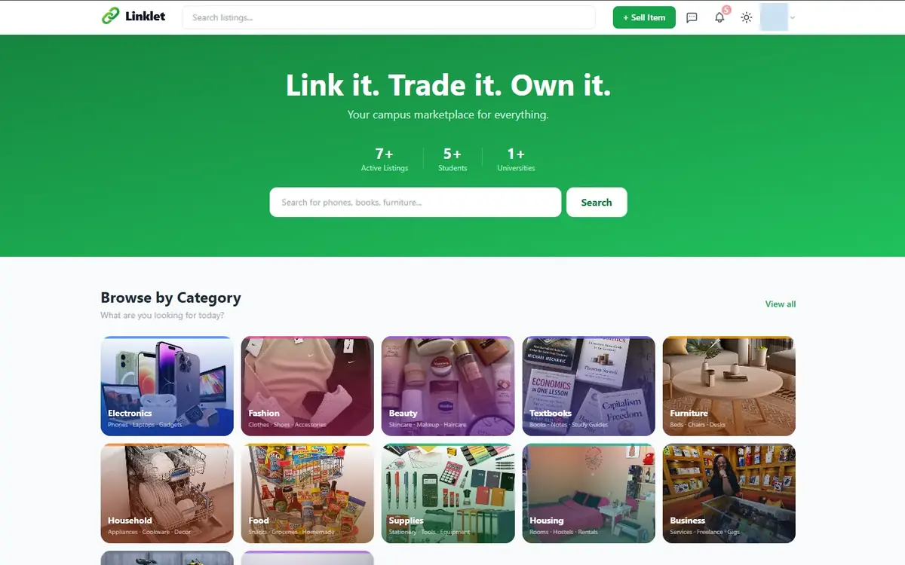

Marketplace platform
Linklet
A campus marketplace built from zero: React on Vercel, Express and Socket.IO on Cloud Run, PostgreSQL on Supabase, and a messaging product that had to feel safe enough to use.
LiveReact 19, Node.js, Express
Read the case file